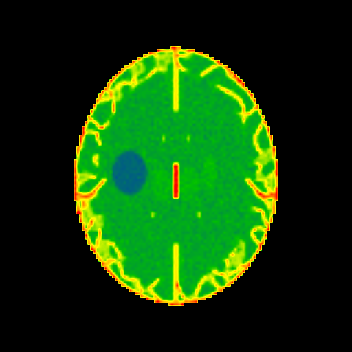

1 · Sourceb 0 s/mm² · 1 / 12
ROI1
DWI IVIM DKI · b 0 · Slice 2/2
↑↓ slices · ←→ b-values
↑↓ slices · ←→ b-values
PHANTOM^SYNTHETIC
NMR-PHANTOM-001 · 2026-01-01
NMR-PHANTOM-001 · 2026-01-01
Window auto a.u.
Zoom 100 %
2.0 × 2.0 mm · 40 × 40
APRL
2.0 × 2.0 mm · 40 × 40
2 · Maps

D [×10⁻⁶ mm²/s]
Kurtosis + simplified IVIM · Blue-to-Red
Kurtosis + simplified IVIM · Blue-to-Red
Window 0–3000 ×10⁻⁶ mm²/s
Zoom 100 %
2.0 × 2.0 mm · 40 × 40
APRL
2.0 × 2.0 mm · 40 × 40
3 · TableRegion parameters · Slice 2/2
| ROI | D[×10⁻⁶ mm²/s] | f[%] | K[unitless] | R²[fit] | NRMSE[% of S0] |
|---|---|---|---|---|---|
| ROI1 | 1112 | 6.4 | 0.71 | 0.9998 | 0.38 |
ROI1 · 48 vox · 192 mm² · up to 10 ROIs across slices.
4 · GraphSignal vs b · ROI1
Measured · used
Excluded (0 < b < 100)
Fit